顾客也有自己的期待
32 位顾客拥有不同的来访条件与点餐偏好。银级、金级顾客会思考第二道料理；图鉴逐项记录已达成的条件，让研发、雇佣与升级都有新的目标。
INDEPENDENT WEB GAME · 2026
猫猫小窝 ＆ 猫猫餐厅
把一个温暖的想法，
做成可以每天回来的游戏世界。
公开演示 · 刷新后恢复默认进度


A LITTLE WORLD, BUILT WITH CARE
我想把“陪伴”变成可以触摸、可以积累，也可以一起创造的日常。
于是有了《猫猫小窝》与《猫猫餐厅》：回家照顾一只会回应的小猫，出门经营一间热闹的小馆。喂食、游戏、研发与经营连接在一起，每一次小小的行动，都为这个世界添一点成长。
这是我的 Vibe Coding 创作实践。我负责创意方向、玩法与交互设计，通过 AI 协作开发和视觉制作，把角色、系统、声音与长期进度整合为一个持续迭代的网页游戏。
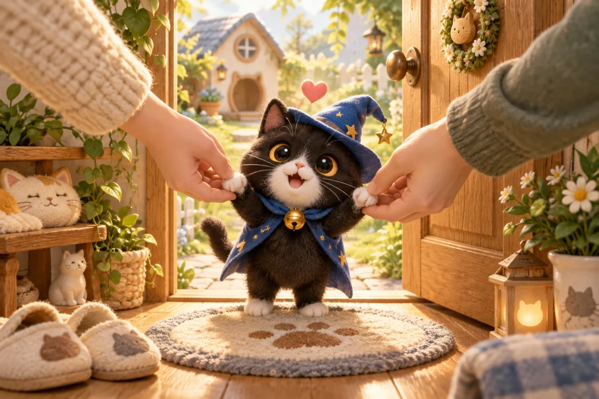
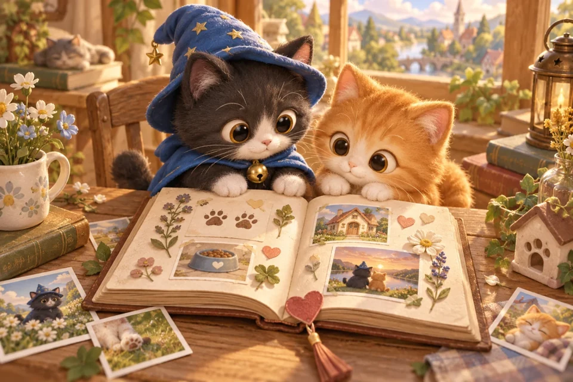
01 / CAT NEST · 猫猫小窝
一个让人愿意停留的小窝。
也让两个人的陪伴，有迹可循。
呼吸、眨眼、摆尾，摸摸时眯眼，喂食时低头吃饭。可以旋转观看、切换表情和装扮，也可以进入沉浸陪伴，让界面退后，安静地陪它一会儿。
共享餐盘、在线状态与照顾足迹。通过一起开饭、默契接力和安心晚安，把彼此的照顾变成可以完成的小约定。
饱饱、开心、活力影响小猫状态，成长气泡等待亲手收取。照顾、游戏和第一次相遇汇成日记，逐步收集主题卡片，收藏属于你们的时刻。
13 款小游戏覆盖轻松陪玩、人机挑战与双人对战。达成陪伴成就后，邀请 36 只猫友，探索猫猫车站、日式庭院、西部露台与暖暖雪庭。
02 / CAT RESTAURANT · 猫猫餐厅
从第一张订单，到一间有自己风格的餐厅。
玩家既是经营者，也是猫猫团队的搭档。
前厅、厨房和门外街道同屏呈现。顾客等位、入座、点餐、用餐、结账，员工在工位间往返，每一个状态都有清楚的反馈。
21 道料理包含 169 道独立工序，取料、洗切、调味、煎炒与装盘各有动作。多个订单共享 10 个厨房工位，形成真正需要协调的制作节奏。
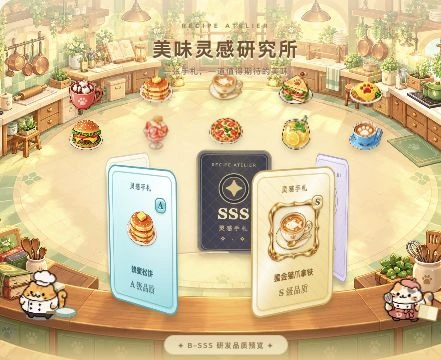
从顾客的灵感赠礼开始，探索菜谱碎片、积累研究进度，再把料理逐步培养到更高品质。重复碎片继续累计，多余部分可融合为新的灵感。
旋涡汇聚、卡牌揭晓、品质庆典，为成长赋予仪式感。研发仍在确认时，玩家可以选择等待，也可以先回餐厅经营，结果保留在手账中。
MEET YOUR LITTLE TEAM
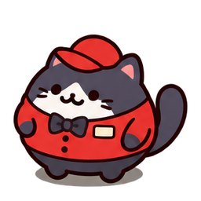
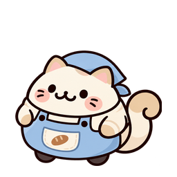
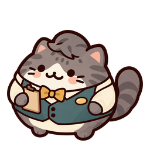
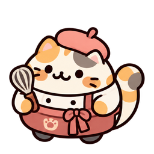
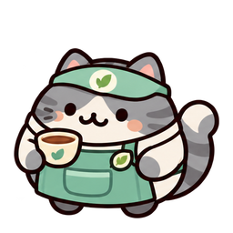
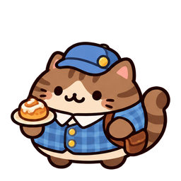
初始主厨与六位可雇佣伙伴组成团队。送餐员小黑、帮厨奶盖、领班芝麻、甜点师布丁、饮品师薄荷和传菜员栗子，各有自己的造型与角色。
速度、体力、耐力、熟练度分别培养。体力消耗、休息恢复、工位占用与送餐返程共同参与调度，让自动化仍然拥有经营深度。
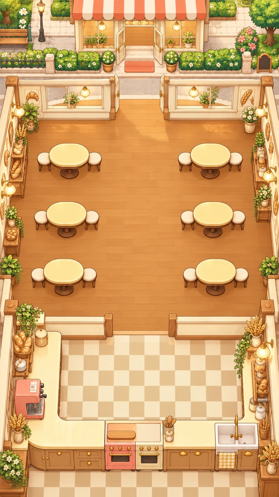
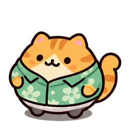
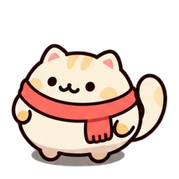
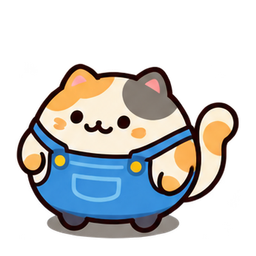
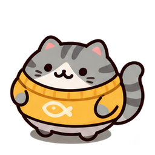
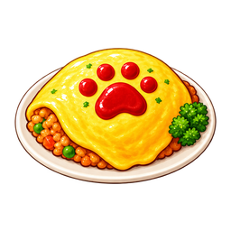
选择场景，看看猫猫们在不同小馆里的日常。
奶油烘焙屋、暖光书房、薄荷花房、海盐假日、樱花茶屋和花灯晚宴。整套场景统一窗景、地板、餐桌与厨房，让布置成为完整的空间叙事。
搭配珍藏装饰与操作圈配色，让玩法界面融入美术。切换场景时，猫猫施工员会进场安装；顾客图鉴、设施与布置条件，又把空间选择连接到经营成长。
32 位顾客拥有不同的来访条件与点餐偏好。银级、金级顾客会思考第二道料理；图鉴逐项记录已达成的条件，让研发、雇佣与升级都有新的目标。
菜谱品质、设施等级、员工能力与来客收集并行成长。每日开店礼、灵感赠礼与金鱼干奖励，为每次回来提供一点小期待。
圆润角色、料理图标、工序圈与手绘空间保持统一。营业和研发配乐、烹饪音效、收款光芒与抛物线奖励，让动作有节奏，也有温度。
TWO EXPERIENCES, ONE WORLD
餐厅小鱼干与小窝金币共用钱包。营业积累小馆经验，也把小猫成长汇入一颗专属厨师爱心，等待玩家回家领取。经营与陪伴，在同一个世界里互相滋养。
03 / THE MAKING · VIBE CODING
用创意提出问题，用设计定义体验，
与 AI 一起把它实现，再在真实使用中打磨。
我把影视创作中对角色、空间、节奏和情绪的关注，带进游戏。小猫的一个回应、员工的一段路线、菜品揭晓的一瞬间，都需要规则与表达共同成立。
从双人陪伴出发，建立照顾、经营、收集与回忆的联系；明确每次点击带来什么反馈、短期目标如何连接长期成长。
设定暖光小窝与手绘餐厅的美术方向，借助 AI 制作场景、料理、角色插画和界面素材，结合授权 3D 角色，让视觉服务玩法。
与 AI 协作实现前端交互、游戏规则、服务端存档、实时同步与动效。让看得见的画面，和背后的进度、资源、状态保持一致。
从多单拥挤、厨师调度、网络等待到动画性能，逐项复现、修复与验证。将持续运营中遇到的问题，转化为更顺畅的体验。
CRAFT BENEATH THE CUTE
可预测操作先在本地反馈，保存进入持久队列。断网或超时保留并重试，以唯一操作回执避免重复结算；随机研发结果以服务端确认为准。
正式小窝通过实时事件同步在线状态与共同进度，并处理并发保存、旧数据兼容与多存档隔离，让两端的陪伴能够延续。
厨师路线、工位排队、休息与返程联动。研发动画和网络等待分别管理，长等待提供选择；适配移动屏幕与减少动态效果偏好。
JavaScript · Vite · Three.js · Node.js · Web Workers · SSE
GitHub Pages + Render
EXPLORE THE DETAILS
展开查看功能。
每个系统，都与陪伴和成长相连。
喂食、摸摸、逗猫、睡觉；9 种日常食物；饱饱、开心、活力三项状态；成长气泡与阶段外观；装扮、表情、动作和沉浸陪伴；共享餐盘、在线状态、照顾足迹与合作接力。
10 款棋类与街机游戏，加上逗猫棒追逐、接住小零食、寻找小玩具。不同玩法提供单人、人机或双人模式；36 只猫友通过成就解锁并邀请到 4 个庭院场景。日记记录照顾、游戏、成长与共同事件，并提供主题收藏。
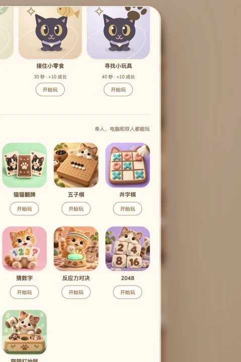
21 道料理、169 道工序、10 个厨房工位、6 位可雇佣伙伴与初始主厨。多单并行、自动制作、员工训练与休息、设施升级、32 位顾客、两轮点餐、灵感探索、五阶品质、碎片融合、6 套完整场景与珍藏装饰。
围绕双方陈词、截图证据、判词解读、修复约定和复议，设计一套完整的沟通流程。正式配置中接入 AI 分析；公开演示使用虚构案件与预设判词，方便观众了解交互，不调用真实付费 AI。